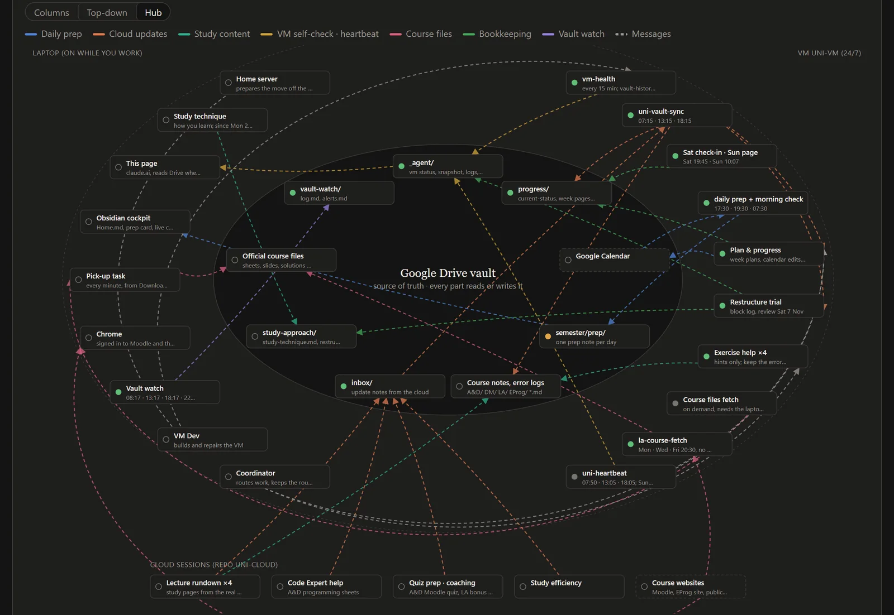
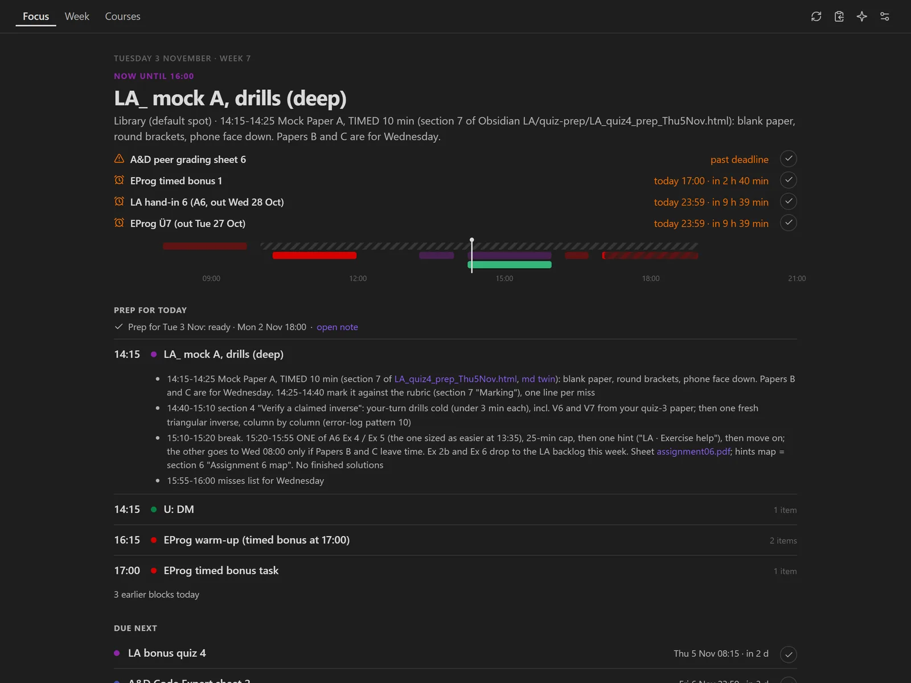
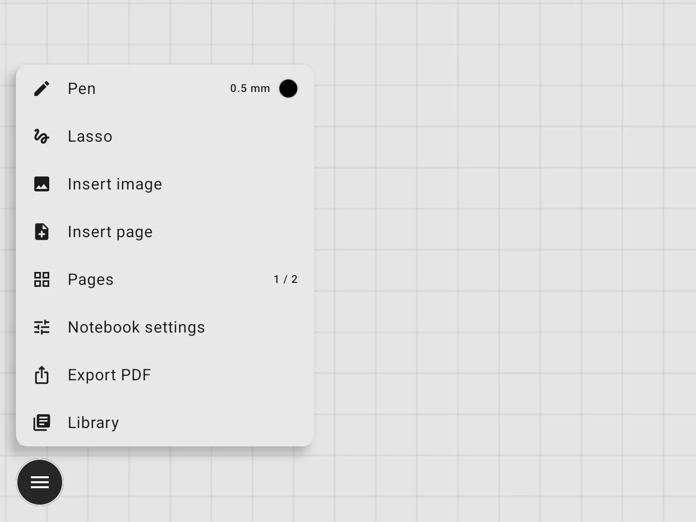

Agent systems
Multi-session agent setups with a coordinator, role agents, handovers, schedules and guardrails. They run around the clock on a cloud VM I manage myself.
I’m Qiang Luo, known online as ktr0a. I study Computer Science at ETH Zürich and build the tools I need when they don’t exist yet: a multi-agent study system that lives in Obsidian, and a handwriting app for my tablet. I also grew Applino, a YouTube channel, to 160k+ subscribers.
Mostly problems with moving parts: systems that keep working when nobody is watching, and tools that take friction out of my day.
Multi-session agent setups with a coordinator, role agents, handovers, schedules and guardrails. They run around the clock on a cloud VM I manage myself.
TypeScript, Kotlin and Python tools I use every day: an Obsidian study cockpit, a handwriting app for my tablet and a personal finance analyzer.
Applino, 2024 to 2026. I led a creative team of five, steered strategy with YouTube analytics, and helped grow two more channels.
Most of this started after the beginning of my bachelor’s, when I kept needing tools and systems for my studies that didn’t exist yet. When I have an idea for one, I build it.
The operating system of my first ETH semester. An Obsidian vault of about 690 notes, run by a team of Claude Code sessions: a coordinator plus role agents for planning, tracking and per-course exercise help. They hand work to each other through notes, a single sync job applies every change, an hourly git history records it, and strict academic-integrity rules mean hints only.
Not public yet. I plan to release the structure as a set of Markdown files you can hand to any DIY agent setup to build your own.

Part of Uni OS · Obsidian plugin · TypeScript
Brings Uni OS into Obsidian, so the whole system runs where my notes already are. The plugin reads the vault live and turns it into a study dashboard with Focus, Dashboard and Agenda layouts and its own iCal parser (recurring, moved and cancelled events, time zones). An optional Claude side panel picks Haiku or Sonnet per question and shows tokens and cost for every answer.

A distraction-free handwriting app for my 13″ tablet: low-latency ink, strokes stored as vectors, atomic saves and a versioned file format with migrations. One on-canvas button, PDF annotation and export, lasso and scribble-to-erase. Notebooks can sync straight into course folders on Google Drive.
A personal app for now. I haven’t decided yet whether to open-source it.

Rebuilt live by a swarm of agents on every visit: canvas overlay, DOM typing engine, procedural WebAudio sound and an animated map of my study system in the hero.
You are hereAn AI grading assistant that gives teachers structured, consistent feedback on student essays. Built in about seven hours.
View on GitHub ↗A live Q&A app for ETH lectures: students join with a six-character code, ask questions and vote on them. React and Vite on the front, a Java Spring Boot API and PostgreSQL behind it. Built as a team over one weekend.
Team repo on GitHub ↗Fetching repositories…
YouTube
A full production and growth operation. I led a creative team of five, iterated on content strategy through YouTube Studio analytics, and helped grow two other channels to 100k+ and 10k+.
I no longer make videos. The numbers are lifetime totals.
Visit the channelI learn by building. When I started at ETH I built myself a study system instead of a to-do list. I like calm interfaces, honest status lights and tools that hold up in daily use.
Before Zürich: civilian service in Vienna, a Matura at BG/BRG Schwechat (I skipped 6th grade along the way), and teaching kids and teens 3D printing, laser cutting and microcontrollers at FabLab Niederösterreich.
Maths, physics and programming contests from my school years, mostly in teams, and two hackathons since.
School category: 13th of 134 teams, top 10% (2025).
1st in Lower Austria in 2025 after two 2nd places; top third nationally.
2nd in Lower Austria, 7th in Austria (2025).
Vienna and Lower Austria round (2024).
Honorable mention for TeachFlow (2025).
Three-day hackathon run by VIS, the CS student association (2026).
Also used in my projects: Kotlin, TypeScript and JavaScript.
Open to internships, collaborations and conversations about agent systems and tooling.